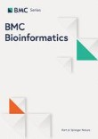
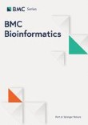
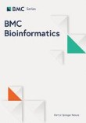

CIBB Conferences on Computational Intelligence Methods for Bioinformatics and Biostatistics
CIBB is an international annual conference on computational intelligence and computational statistics applied to bioinformatics, biostatistics, and medical informatics.
The main goal of the CIBB international conferences is to provide a multi-disciplinary forum open to researchers interested in the application of computational intelligence, in a broad sense, to open problems in bioinformatics, biostatistics, systems and synthetic biology and medical informatics. Cutting-edge methodologies capable of accelerating life science discoveries will be discussed.
Following its tradition and roots, this year's meeting will bring together researchers from the international scientific community interested in advancements and future perspectives in bioinformatics and biostatistics. Moreover, looking at current trends and future opportunities at the edge of computer and life sciences, the application of computational intelligence to system and synthetic biology, and the consequent impact on innovative medicine will be of great interest for the conference. Theoretical and experimental biologists are also invited to participate in order to present novel challenges and foster multidisciplinary collaboration.
After the conference, the authors of all the accepted short papers presented at the conference will be invited to submit an extended version of their manuscripts to the conference proceedings book in Springer Lecture Notes in Bioinformatics (LNBI) or to supplements in journals such as BMC Bioinformatics or BMC Medical Informatics and Decision Making.

When and where
The next edition of the conference, CIBB 2025, will happen in Milan (Italy, EU) in person on 10, 11, 12 September 2025.
Please check out the CIBB 2025 website
Future editions
We will then consider applications for the organization of the following edition of the conference (CIBB 2026).
Would you like to host the CIBB 2026 edition at your university or research centre?
Or are you interested to help in the organization of the next CIBB conference edition, wherever it will be?
If yes, please send us an email at davidechicco(AT)davidechicco.it and let's talk about it.
Conference history
The International Meeting on Computational Intelligence Methods for Bioinformatics and Biostatistics (CIBB) conference series was originally founded by Roberto Tagliaferri (Università di Salerno, Italy), Francesco Masulli (Università di Genova, Italy), and Antonina Starita (Università di Pisa, Italy), who formed its initial steering committee in 2004. The conference started as a special session of the 14th Italian Workshop on Neural Networks (WIRN 2004) in Perugia (Italy), and was a special session of international conferences organized in Italy for its first four editions.
CIBB became an independent conference in October 2008 with its first autonomous edition in Vietri sul Mare (Italy), held few months after the sad demise of the CIBB founder Antonina Starita (1939-2008).
Since then, the conference kept growing with larger international audiences and with contributed studies of higher quality.
Since 2004, the CIBB conference series generated 13 proceedings books, 4 sections of proceedings books, and 10 journal supplements, that together contain around 450 peer-reviewed original scientific publications. Approximately 1,400 participants attended the CIBB conferences so far.
Conference editions websites
CIBB 2025, Milan, Italy (upcoming edition)
General chairs: Silvia Cascianelli, Sofia Mongardi, Marco Masseroli
CIBB 2024, Benevento, Italy
General chairs: Francesco Napolitano, Luigi Cerulo
Keynote speakers: Michele Ceccarelli, Ruth Heller, Marieke Kuijjer
Invited speakers: Claudio Angione
CIBB 2023, Padua, Italy
General chairs: Martina Vettoretti, Erica Tavazzi, Enrico Longato
Keynote speakers: Blaž Zupan, Arianna Dagliati, Jessica Barrett
Invited speakers: Davide Risso, Marco Beccuti, Marco Antoniotti
CIBB 2021, online, virtual edition
General chairs: Davide Chicco, Angelo Facchiano, Margherita Mutarelli
Keynote speakers: Karsten Borgwardt, Ombretta Melaiu, André M. Carrington, Stefano Tonzani, Olaf Wolkenhauer
Invited speakers: Dmytro Fishman
CIBB 2019, Bergamo, Italy
General chairs: Paolo Cazzaniga, Ivan Merelli, Daniela Besozzi
Keynote speakers: M Luz Calle, Ana Cvejic, Uzay Kaymak
Invited speakers: Marco Masseroli
CIBB 2018, Caparica, Portugal
General chairs: Maria Raposo, Paulo Lisboa, Giorgio Valentini
Keynote speakers: Alberto Paccanaro, Alexandra Carvalho, Benoit Liquet, Fernando L Ferreira, Veronica Vinciotti
CIBB 2017, Cagliari, Italy
General chairs: Massimo Bartoletti, Gunnar Klau, Leif Peterson
Keynote speakers: Alessandra Carbone, Valentina Boeva, Manja Marz
CIBB 2016, Stirling, Scotland
General chairs: Andrea Bracciali, David Gilbert, Gilbert MacKenzie
Keynote speakers: Mark Beaumont, Natalio Krasnogor, Antonietta Mira, Bud Mishra, Daniela Paolotti, Guido Sanguinetti
CIBB 2015, Naples, Italy
General chairs: Claudia Angelini, Adriano Decarli, Erik Bongcam-Rudloff
Keynote speakers: Michele Ceccarelli, Dario Greco, Dirk Husmeier, Wessel van Wieringen
CIBB 2014, Cambridge, England
General chairs: Clelia Di Serio, Pietro Liò, Sylvia Richardson, Roberto Tagliaferri
Keynote speakers: Monica Chiogna, Chris Holmes, Jean Michel Marin
CIBB 2013 (co-organized with PRIB 2013), Nice, France
General chairs: Enrico Formenti, Ernst Wit, Roberto Tagliaferri
Keynote speakers: Anne Siegel, Ernst Wit, Sylvain Sené
CIBB 2012, Houston, Texas, USA
General chairs: Leif Peterson, Francesco Masulli, Giuseppe Russo
Keynote speakers: Jim Bezdek, Elia Biganzoli, Douglas Robinson
CIBB 2011, Gargnano, Italy
General chairs: Elia Biganzoli, Andrea Tettamanzi, Alfredo Vellido
Keynote speakers: Nikola Kasabov, Clelia Di Serio, Elena Marchiori
CIBB 2010, Palermo, Italy
General chairs: Paulo J Lisboa, Riccardo Rizzo
Keynote speakers: Raffaele Giancarlo, Paulo J Lisboa, Gianluca Pollastri
CIBB 2009, Genoa, Italy
General chairs: Francesco Masulli, Leif E. Peterson, Roberto Tagliaferri
Keynote speakers: Gilles Bernot, Taishin Nomura
CIBB 2008, Vietri sul Mare, Italy
General chairs: Francesco Masulli, Roberto Tagliaferri, Gennady M. Verkhivker
Keynote speakers: Mario Lauria, Nicolas Le Novere, Giorgio Valentini
CIBB 2007 (within WILF 2007), Camogli, Italy
General chairs: Roberto Tagliaferri, Giorgio Valentini
Keynote speakers: Joaquin Dopazo, Sushmita Mitra
CIBB 2006 (within FLINS 2006), Genoa, Italy
General chairs: Francesco Masulli, Antonina Starita, Roberto Tagliaferri
CIBB 2005 (within WILF 2005), Crema, Italy
General chairs: Francesco Masulli, Antonina Starita, Roberto Tagliaferri
Keynote speakers: Pierre Baldi
CIBB 2004 (within WIRN 2004), Perugia, Italy
General chairs: Francesco Masulli, Antonina Starita, Roberto Tagliaferri

 
